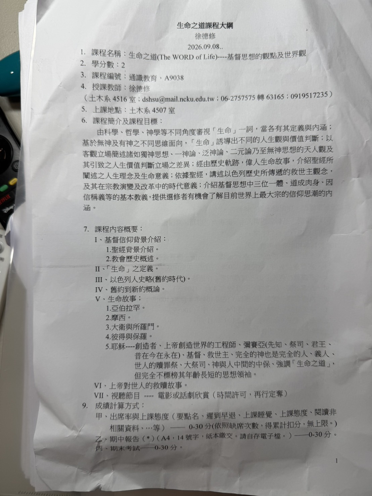
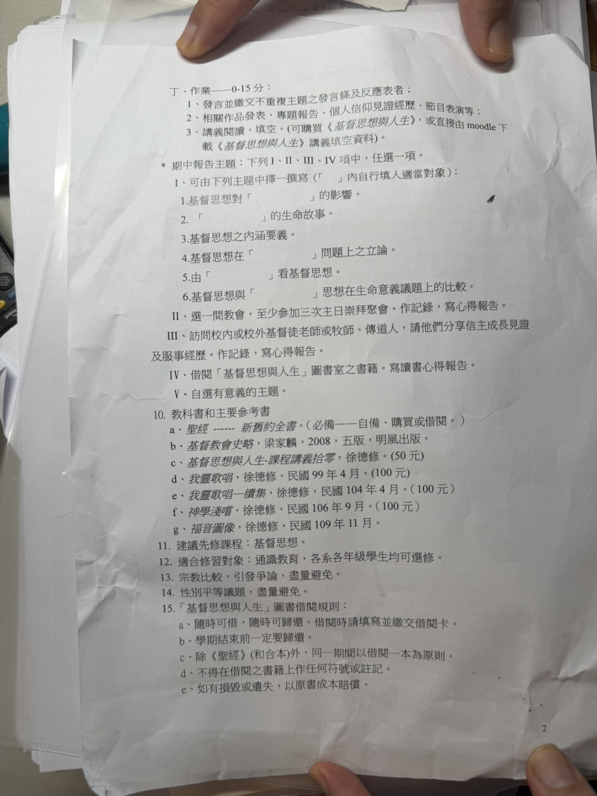

這套資料可以怎麼用？
你可以直接針對這套 66 卷資料進行：「某節經文附件怎麼解釋」、「比較兩段經文」、「把某一卷整理成章節重點」、「找出所有提到某個主題的地方」、「按照附件的註解解釋原文」等。分析時以這兩組附件中的內容為主要依據，而不是只憑一般聖經知識。
① 單節經文
指定書卷、章、節，集中閱讀正文、註腳、原文字義、翻譯與背景說明。
② 經文比較
把兩段或多段經文放在同一主題下，比較語境、人物、神學觀點與關鍵詞。
③ 書卷整理
依章節整理主題、人物、事件、轉折及與整體救贖歷史的關係。
④ 主題追蹤
例如「生命、救贖、信心、罪、恩典、智慧、彌賽亞」等，跨 66 卷建立經文脈絡。
⑤ 原文／註解
依附件中的希伯來文、希臘文、詞義、語法、異文與翻譯註釋進一步解釋。
⑥ 課程報告
把經文證據、附件註釋與課堂「生命之道／基督思想」議題連結，形成可引用的論證架構。
與《生命之道》課程的連結
前面這套 66 卷、約 2,780 頁的聖經資料，對第一類期中報告尤其有用：可以直接從附件找相關經文與註釋來支撐報告，而不是只寫一般性的宗教心得。


聖經 66 卷 PDF
輸入中文或英文書名搜尋；點選卡片會直接開啟本 ZIP 內對應 PDF。